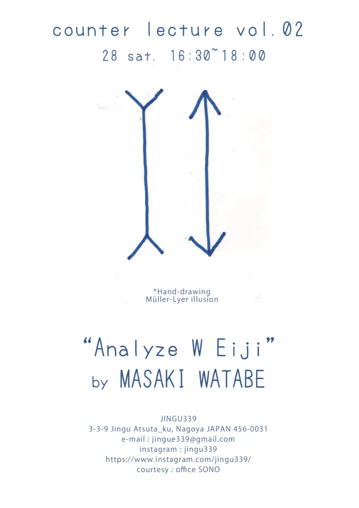

ニュースNews
ニュース
展覧会は第 1 章。二人のワタナベエイジの活動は「新たな展開の過程にある」（展覧会後記）。新しい順。
愛知教育大学の夏期集中講義に二人で登壇
渡辺英司と渡辺英治が並んで登壇した、愛知教育大学の夏期集中講義の記録。

愛知教育大学 夏期集中講義に二人で登壇 2026.8.20写真提供：アートオブリスト実行委員会 YouTube「博士と道化師」で渡辺英治の研究とアート活動が紹介される
全 3 本の動画。第 1 回は 8 月 17 日に公開。
Art Obulist 公式 YouTube チャンネルで全編（1時間25分14秒）が視聴できます。
counter lecture vol.02「Analyze W Eiji」
物理学研究者・渡部匡己による講義。Jingu339（名古屋市熱田区神宮）、16:30–18:00。フライヤーには手描きのミュラーリヤー錯視。講義の内容は「W Eiji 論」のサイトに。

counter lecture vol.02 “Analyze W Eiji” フライヤー 2026.3.28 Jingu339制作：渡辺英司 / courtesy office SONO ワタナベエイジ展「Morning Monsters / W Eiji」が閉幕。アートオブリスト史上、最多の来場者数を記録しました。最終日には座談「あくをすくう」（渡辺英司 vs 拝戸雅彦）。
休憩棟で渡辺英司と渡辺英治が語り合いました。進行は山本さつき。参加者約50人。